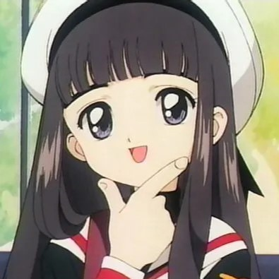
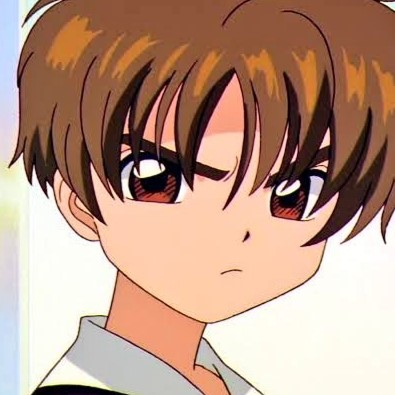
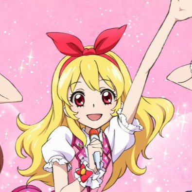
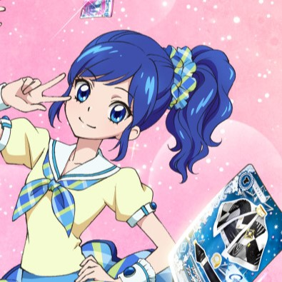
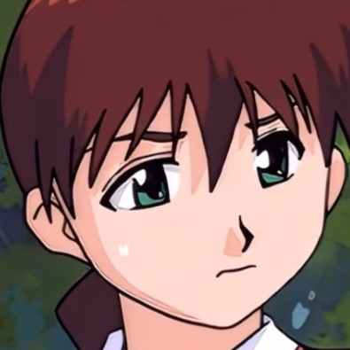
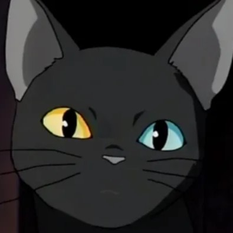
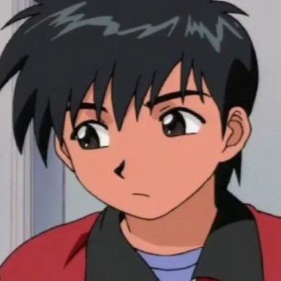

다른 사람의 의견 듣지않습니다. 내 맘대로 명작선! 지금봐도 재밌다!
<카드캡터 체리>
줄거리
평범한 초등학교 4학년 체리는 고고학자인 아빠의 서고에서 낡은 책을 우연히 펼쳤다가 봉인의 수호자 케르베로스를 깨우고 만다.
케르베로스로부터 마법의 힘을 받아 카드캡터가 된 체리는 세상에 재앙을 가져온다는 크로우 카드의 회수와 봉인을 명 받는데...
그러던 어느 날 체리의 반에 새로운 남학생이 전학을 온다. 전학생은 다짜고짜 체리에게 크로우 카드를 내놓으라고 하는데?!
시청 가능 OTT사이트
오리지널을 제외한 클리어카드편, 극장판의 경우 라프텔과 티빙에서 시청 가능
코멘트
오프닝만 들어도 가슴 설레는 작품... 너무너무 다시 보고 싶은 작품 1위...
등장인물


< 체리 >
카드캡터 체리의 주인공
어느 날 집의 지하실에서 대마법사 크로우 리드가 만든 크로우 카드가 봉인된 책의 봉인을 풀어버린다. 도망간
카드를 모으기 위해서 케르베로스에게 봉인의 열쇠를 받아서 카드캡터가 된다.
< 지수 >
체리의 단짝친구
체리의 단짝 친구이다. 재봉 실력이 뛰어나서 늘 사쿠라의 코스튬을 자체제작하는 모습을 보이며,
사쿠라의 카드 봉인 활동들을 일반인 어린아이 상태로도 전부 따라다니며 찍어댄다.
< 리샤오랑 >
체리의 라이벌
체리와 같은 마법사다. 쌀쌀맞은 성격이며, 사쿠라의 라이벌이자 연적으로 나왔지만 회가 거듭할수록 사쿠라의
영향으로 온화하게 변하며며 마지막에는 성격이 첫 등장 때와 확연히 다르게 바뀐다.
<아이엠스타>
줄거리
라임이는 평범한 중학교 1학년으로 절친인 마린의 권유로 아이돌 양성명문학원인 스타 라이트 학원에 편입하면서,
라임이의 평범했던 일상이 완전히 바뀌어 버렸다.
여러 라이벌들과 만나며 아이돌로써 마음가짐을 배우고
아이 엠 스타 카드를 사용하여 여러 오디션에 도전하게 되는데…
신인 아이돌 라임이의 밝고 활기찬 활동이 지금 시작된다!
시청 가능 OTT사이트
라프텔에서 극장판 꿈의 오디션과 1기 시청 가능
코멘트
동생과 신나게 춤을 따라췄습니다. 여기가 바로 노래 맛집! 아이돌을 꿈꾸는 사람 보세요.
등장인물


< 라임 >
아이엠스타의 주인공
아이돌을 하기 이전에는 그냥 평범한 도시락 가게 딸이었으며 연예계에 둔한 일반인이었다.
어느 날 루나의 라이브를 본 이후 그녀를 동경하게 되어 절친 아오이와 함께 스타라이트에 편입하고부터 이야기가 시작된다.
< 마린 >
라임이의 절친
라임이에게 스타라이트 학원 편입을 권했으며,
라임이의 룸메이트다
라임이의 서포터즈 1호로
라임이를 누구보다 지지한다. 아이돌에 관해서는 넓고 방
대한 지식을 가지고 있어, 아이돌 박사라는 이명이 있다.
< 보라 >
라임과 마린과 함께 솔레이유의 멤버이다
철들기 전부터 귀여운 외모 덕분에 키즈 모델로 활동 했고, 그대로 자라서 주로 모델 활동과 아이돌 활동을
하며 연예계 활동을 해왔기 때문에 이미 인기 아이돌이다.
전문 분야도 모델과 런웨이.
<학교괴담>
줄거리
어머니를 여의고 아버지와 함께 시골로 이사 온 초등학교 5학년생 나해미 는 부모가 다녔던 아마노가와 초등학교에 전입을 오게 되었다.
해미의 일행은 학교의 구교사를 헤매다 거기서 요괴들의 습격을 받게 된다.
그곳에서 해미의 어머니가 남긴 '요괴일기'를 발견하고, 일기에 쓰인 방법을 따라 요괴를 격퇴하고
요괴 다크시니가 반려 고양이안으로 봉인되어버린다. 다크시니를 쫓아내기 위해선 다른 요괴를 퇴치해야 한다는 것을 알고서,
해미네 '요괴일기'의 정보를 토대로 다른 요괴들을 퇴치하기 시작한다.
시청 가능 OTT사이트
없음
코멘트
어렸을 때도 지금봐도 무섭다! 시간이 갈 수록 해미네 가족에게 정이 드는 다크시니의 모습이 관전 포인트!
등장인물



< 나해미 >
학교괴담의 주인공
엄마가 돌아가신 뒤 부모가 살던 도쿄 근처로 전학 오게 된다.
학교 구교사에 들어갔다 다크시니를 만나게 되고, 엄마의 유품 요괴일기로 다크시니를 봉인한 뒤, 수많은 요괴들과 조우하게 된다.
< 다크시니 >
해미네 가족이 키우는 고양이에 봉인 된 요괴.
성격은 한마디로 굉장한 츤데레다. 츤데레답게 처음엔 주인공인 해미네 집에 식솔로 지내며 온갖 거친 언사로 위협을 일삼지만
점차 인간에 대한 애틋함을 느낀 것인지 도움을 주는 빈도가 높아진다.
< 해미의 친구들 >
해미와 함께 우여곡절을 겪으며 요괴 봉인을 도운다.
장영빈, 오경태, 나누리(해미의 동생), 마리아가 있다. 마리아는 중학교 선배이다. 위 이미지는 장영빈으로
해미와 케미가 가장 좋다.